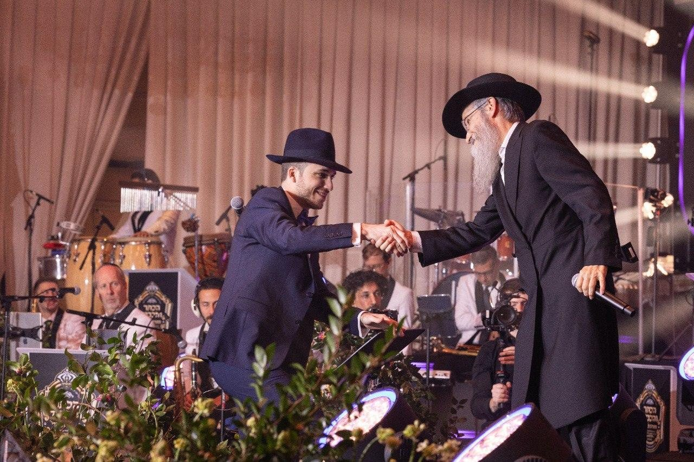
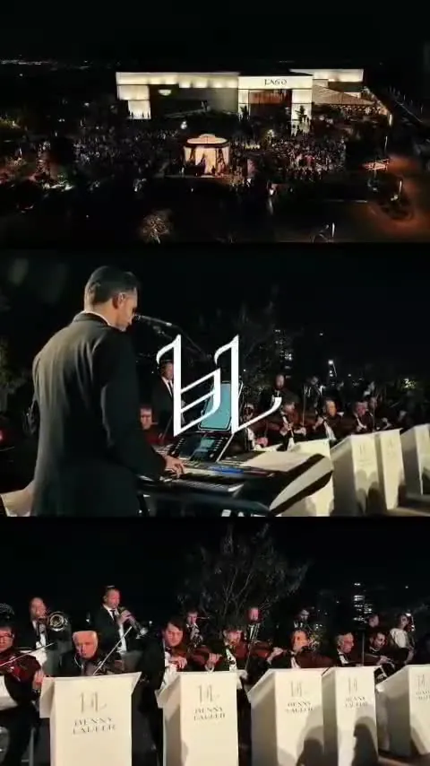

Musique juive et hassidique : houppa, mariages, concerts
Benny Laufer
La musique live d'un orchestre pour les grands moments de la vie. Nous nous déplaçons partout dans le monde.

Un orchestre live émeut l'invité qui comprend chaque mot comme celui qui n'en comprend aucun.
À la houppa, au gala ou au concert, nous apportons un son que toutes les salles du monde reconnaissent, façonné autour de vos coutumes et de votre histoire. Et nous venons à vous, partout dans le monde.

Musicien, arrangeur et chef d'orchestre
Benny Laufer est un musicien, arrangeur, compositeur et chef d'orchestre israélien, fils de la légende de la musique Moshe Laufer.
L'orchestre porte son nom, et il le dirige dans chaque production. Chaque événement commence par une conversation sur ce qui compte pour vous et sur les coutumes de votre famille, puis nous construisons ensemble le programme musical.
En scène


Écoutez. Regardez. Ressentez.
Touchez une vidéo pour la regarder avec le son



De la musique pour chaque occasion
Musique de houppa et cérémonie
La musique de l'entrée, des bénédictions et du bris du verre, adaptée aux coutumes de votre famille.
Orchestre de mariage
Un programme live complet, de l'accueil à la dernière danse.
Soirées de gala et dîners
Une musique élégante tout au long de la soirée, avec un set d'honneur pour le point d'orgue.
Concerts
Des programmes de concert complets pour communautés, salles et événements culturels.
Productions sur mesure
Répertoire, taille de l'ensemble et mise en scène construits autour de votre événement.
Réservez votre date
Un seul message
Parlez-nous de votre jour : l'événement, la date et le lieu. Un seul message WhatsApp suffit.
Un programme sur mesure
Répertoire, ensemble et timing adaptés aux coutumes de votre famille et à vos goûts.
Vous profitez, simplement
Nous nous occupons du reste, de la répétition à la dernière note.
Parlons de votre événement
Renseignez trois informations et nous ouvrons un message WhatsApp prêt à envoyer, ou contactez-nous directement.